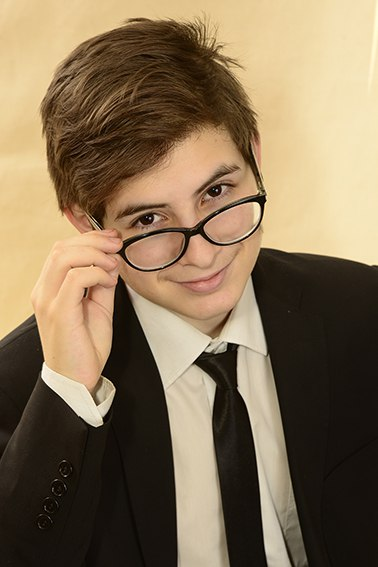

Матвей Бухарцев - российский программист и автор видео. Имеет опыт веб-разработки и создания программного обеспечения более чем на 10 различных языках. С 2020 года является студентом Московского Политехнического университета.
Матвей социально активный и творческий человек. На протяжении обучения в школе участвовал во множестве соревнований, в том числе во Всероссийской олимпиаде школьников и Чемпионате по чтению вслух среди старшеклассников "Страница". Закончил музыкальную школу и школу программистов.
